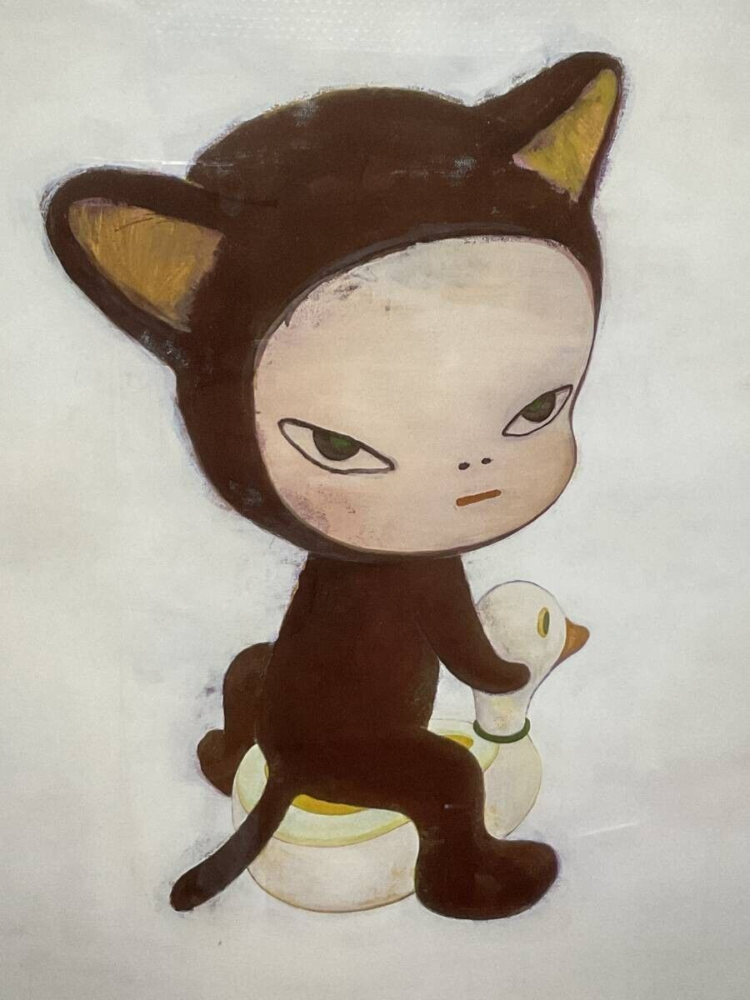
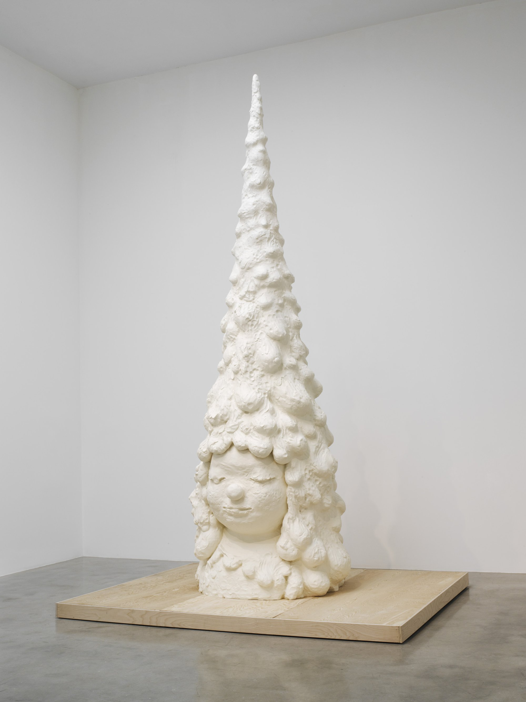

Yoshitomo Nara is one of the most beloved contemporary Japanese
artists. The protagonist in his works, a girl with big, wide eyes
and often wearing an unhappy look or a sarcastic smile, strikes deep
resonance among people, especially the young ones who see in the
girl shared loneliness and growing pains and a rejection of the
adults' world.
Yoshitomo Nara is a pioneering figure in contemporary art whose
signature style—which expresses children in a range of emotional
complexities from resistance and rebellion to quietude and
contemplation—celebrates the introspective freedom of the
imagination and the individual.

Yoshimoto Nara, Harmless Kitty
Yoshitomo Nara, Miss Forest / Thinker, 2016
For Nara, the type of institution or the size of a space matters
less than how connected he feels with its environment and his
approach to art is similarly dependent on his sense of connection
with its making. In 2011, the Great East Japan Earthquake and
Tsunami greatly affected Nara’s worldview and impacted the work he
made after that time. Still bearing the style he had developed
throughout his oeuvre, this later work marked a thoughtfulness and
pathos that seemed to reflect on themes such as impermanence,
temporality, beauty, and the present. In the Milky Lake/Thinking One
(2011), the first painting he made after the disaster, exudes the
meditative and thoughtful figures that marked a shift in his
practice and could be seen in Thinker (2017), at Pace in New York,
and Ceramic Works And… (2018), at Pace in Hong Kong.

Yoshitomo Nara, Miss Forest
Yoshitomo Nara, 1.2.3.4., Change the History, 2007,
A year after Nara’s return to Japan in 2000, his seminal solo
exhibition titled I DON’T MIND, IF YOU FORGET ME was mounted at the
Yokohama Museum of Art and displayed Nara’s extensive
multidisciplinary approach to artmaking. In addition to stuffed
animals, sculptures, paintings, and drawings, the artist presented
Fountain of Life (2001), a ceramic sculpture featuring running
water, and Time of My Life (2001), his “drawing room” installation
built out of plywood, lit with bare lightbulbs, and filled with
drawings on paper and various ephemera. This installation would
anticipate a series of collaborations with the design collective
graf, such as Yoshitomo Nara + graf: Torre de Málaga (2007), a
site-specific installation at the Centro de Arte Contemporáneo de
Málaga in Spain. Torre de Málaga, a towering house, was built out of
industrial and waste materials collected from the city and included
the work 1.2.3.4, Change the History (2007), which Nara painted on
site and mounted onto the tower. Evoking Nara’s spirit of
collaboration and existential introspection, the exhibition carried
an implicit criticism of the effects of industrialization and
globalization.